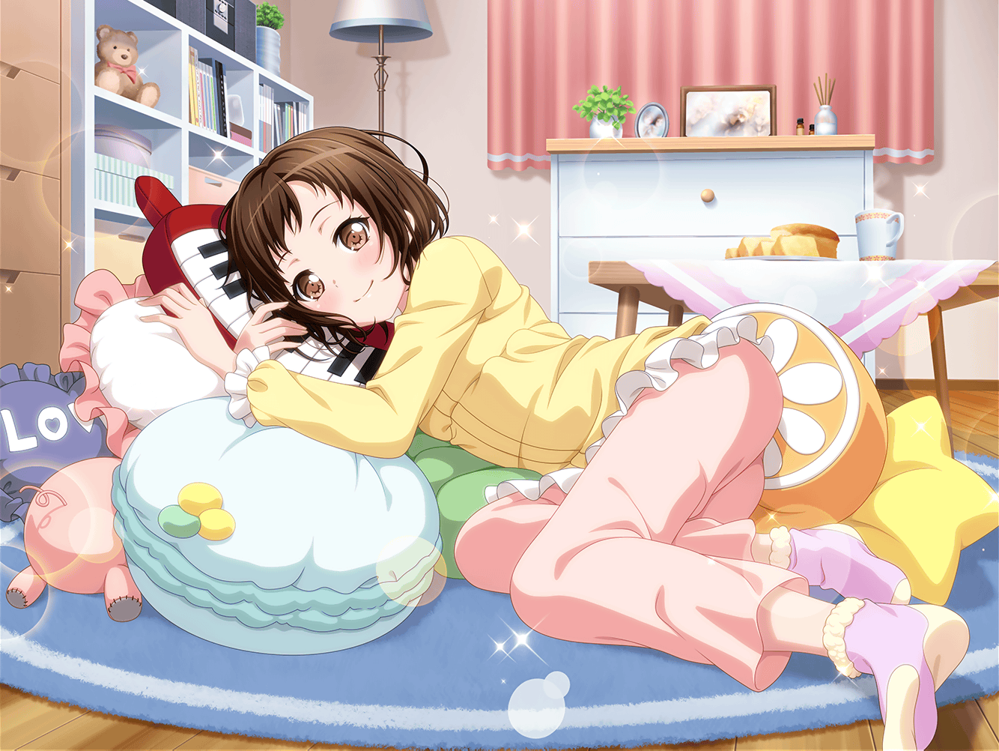

合同練習当日
スタジオ
つぐみ
それじゃあ、そろそろ休憩にしよっか！
香澄
さんせー！
麻弥
ジブン達、初めて合わせたにしては、
結構いい感じですよね！
こころ
ええ！
本番のライブが楽しみだわ！
はぐみ
うんうん！
はぐみも、すっごく楽しい！
彩
あははは……私はいまだに同じところで
ひっかかっちゃうけど……
友希那
丸山さん、少しいい？
彩
あ、はい！
なんでしょうかっ！？
友希那
丸山さんが気にしているところ、もう少し口の形を意識した方が、
歌いやすいし、声も伸びると思うわ
彩
ゆ、友希那ちゃん……！
ありがとう！ さっそくやってみるね！
つぐみ
ふふっ、なんだかいい感じだね、蘭ちゃん？
蘭
うん、そうだね。
思ってたより悪くないかも
つぐみ
(それに蘭ちゃんと友希那先輩も、
今のところはケンカしてないし……)
友希那
それと、美竹さん。
２番の入り、少しテンポが駆け足だったと思うわ
蘭
……そうですか？
あたしは別にそうは思いませんでしたけど
つぐみ
(……って！
言ってるそばから一触即発！？)
つぐみ
そ、そういえば！
他の班のみんなは、今何してるんだろうねっ？
友希那
私もよくは知らないけれど……
リサは衣装班だけで打ち上げでもしようかな、
なんて言っていたわね
はぐみ
打ち上げっ！？
いいなー！ はぐみも打ち上げ行きたーい！
香澄
いいねいいねっ！
それじゃあライブが終わったらみんなでやろうよ！
ドーンと！
こころ
あら、それはとってもステキなアイディアね！
やりましょう！
つぐみ
よ、よかった……なんとか話がそれた……
あ、ひまりちゃんからメールだ。
わぁ！ みんな見て！
麻弥
あ、さっき湊さんが言っていた
衣装班の打ち上げ中の写真ですね！
みなさん、とても楽しそうです！
つぐみ
『こっちは盛り上がってるけど、
そっちはどんな感じ？』だって。
えーっと、こっちも楽しく練習して――
彩
つぐみちゃん、ストーップ！
つぐみ
は、はい！
どうしたんですか、彩さん？
彩
どうせなら、こっちも楽しそうな様子、
写真に撮って送ろうよ！
みんな、どうかな？
香澄・はぐみ・こころ
さんせー！
麻弥
いいですね！
初練習の記念に！
蘭・友希那
……
彩
あ、あれ？
二人は……もしかして反対？
蘭
反対……っていうか、
別に撮らなくてもいいかな、って
友希那
ええ、私もまったく同意見だわ
彩
そ、そんなぁ……
つぐみ
(あ、彩さん……それにみんなも、
ガッカリしてる……ここは私がなんとかしなくちゃ！)
つぐみ
……ねえ、蘭ちゃん。
写真撮るの、どうしても嫌？
蘭
嫌ってほどじゃないけど……
つぐみ
それなら、撮ってみない？
こういう機会ってあんまりないと思うし……
蘭ちゃん、お願い！
蘭
……まぁ、つぐみがどうしてもって言うなら。
わかった、１枚だけね
つぐみ
よかったぁ～！
つぐみ
せ、先輩は写真……やっぱり嫌ですか？
友希那
さっきも言ったけど、
私は別に写真なんて撮る必要がないと思うわ
つぐみ
で、でもでも！
みんなで写真撮ってるところ見たら、
リサ先輩も安心すると思います！
友希那
……わかったわ。
それじゃあ１枚だけ。
それが終わったらすぐに練習に戻るのよ
香澄・はぐみ・こころ
やったー！
麻弥
羽沢さん、あっという間に
二人とも説得するなんてすごいですね！
つぐみ
え、そんなことないですよ！
彩
よーし、それじゃあ撮るよ～！
みんな、集まって～！
彩
……あ、ストップ！
どうせならみんなでお揃いのポーズとかにする！？
私、とっておきのポーズが……
蘭・友希那
撮るなら早くしてくださ……あ
つぐみ
……ふふっ、あはは！
蘭
ちょ、ちょっとつぐみ、なんで笑って……
つぐみ
だって……さっきから見てると、
二人って意外と似た者同士だなって思って！
香澄
あ、それ私も思った！
はぐみ
二人は仲良しなんだね！
蘭・友希那
そ、そんなことない……
こころ
すごいわ！
本当に息がピッタリね！
彩
よーし、撮れた！
友希那
……ま、丸山さん？
どうして今撮ったの？
彩
だ、だって～！
みんなすっごく楽しそうだったから！
ほら、見てよ！
つぐみ
うんうん！
それじゃあこれをひまりちゃんに送って、っと
つぐみ
あ、もうこんな時間ですね！
そろそろ練習再開しましょう！
蘭
湊さん……なんていうか、
お疲れさまです……
友希那
ええ……美竹さんも……
麻弥
こ、この二人をここまで動揺させる
羽沢さんって……やっぱりすごい……？